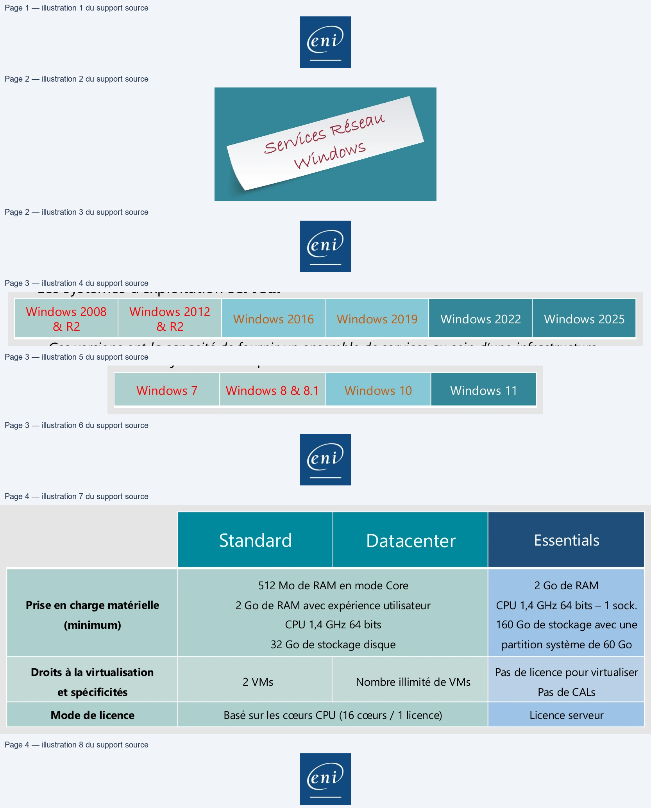
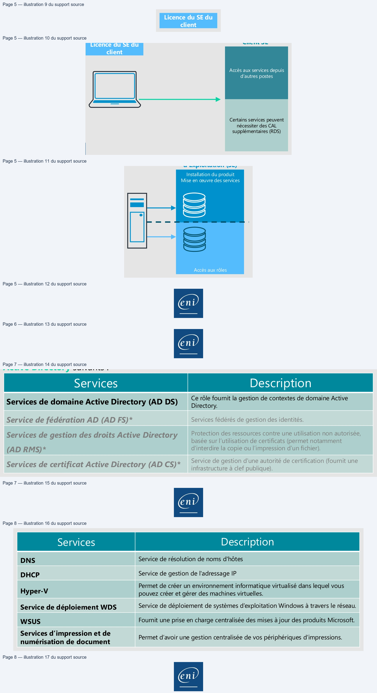
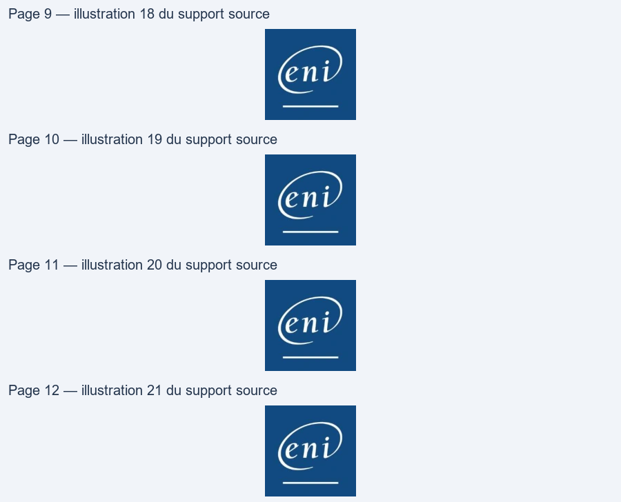
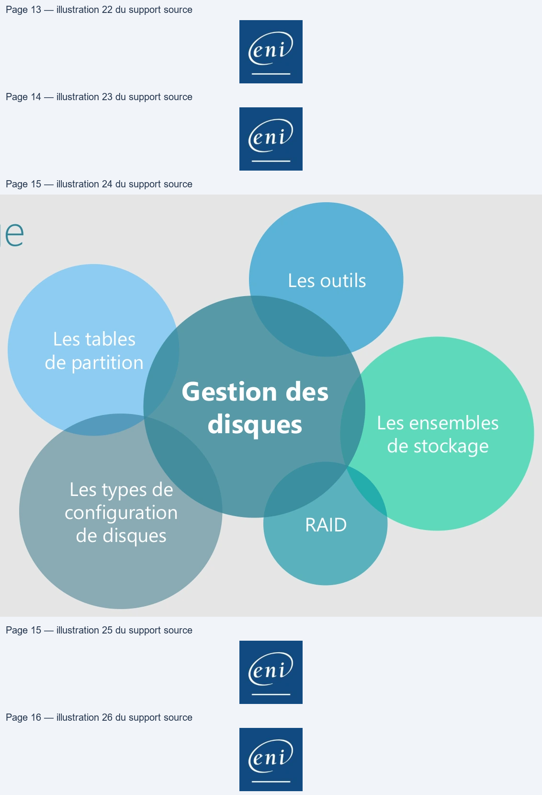
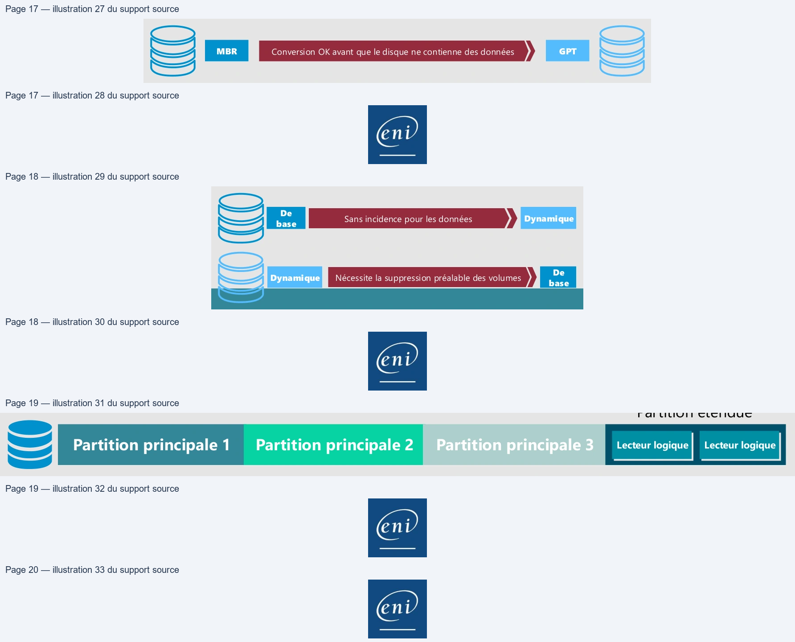
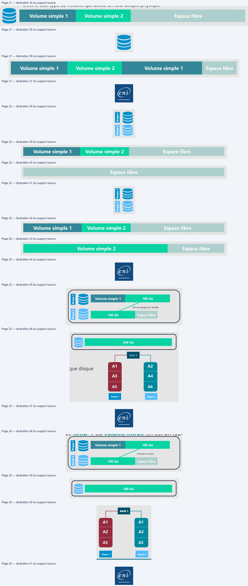
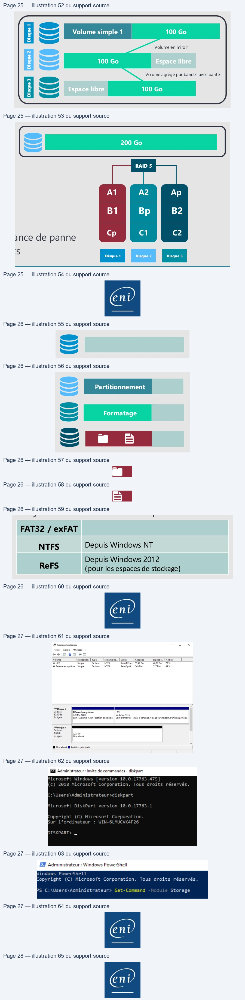
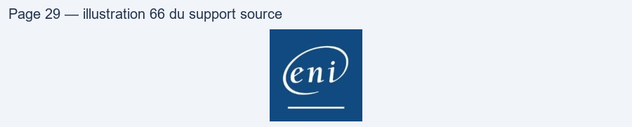

Transcription du document du Drive TSSR. La mise en forme est adaptée au Web ; les compléments IA du portail sont présentés séparément.
End
Administration Windows
• Connaître Microsoft Server et son biotopeObjectifs
• Gérer le stockage du serveur et le RAIDSertRés"
Undone
Windows 2008
Windows 2012
& R2
& R2
Windows 2016
Windows 2019
Windows 2022
Windows 2025
Windows 7
Windows 8 & 8.1
Windows 10
Windows 11
512 Mo de RAM en mode Core
2 Go de RAM
Prise en charge matérielle
2 Go de RAM avec expérience utilisateur
CPU 1,4 GHz 64 bits – 1 sock.
CPU 1,4 GHz 64 bits
160 Go de stockage avec une
(minimum)
32 Go de stockage disque
partition système de 60 Go
Droits à la virtualisation
Pas de licence pour virtualiser
2 VMs
Nombre illimité de VMs
et spécificités
Pas de CALs
Mode de licence
Basé sur les cœurs CPU (16 cœurs / 1 licence)
Licence serveur

Licence d’Accès
Licence du Système
Client SE
d’Exploitation (SE)
Licence du SE du
client
Installation du produit
Mise en œuvre des services
Accès aux services depuis
d’autres postes
Certains services peuvent
nécessiter des CAL
supplémentaires (RDS)
Accès aux rôles
S
=>
• Bien d’autres solutions, outils, applications, non présentés ici, peuvent être
mis en œuvre sur les systèmes d’exploitation serveur (serveur de messagerie
Exchange, serveur de bases de données Microsoft SQL).
Protection des ressources contre une utilisation non autorisée,
basée sur l’utilisation de certificats (permet notamment
d’interdire la copie ou l’impression d’un fichier).
* Non vus pendant ce cours.
DNS
Service de résolution de noms d'hôtes
DHCP
Service de gestion de l'adressage IP
Hyper-V
Permet de créer un environnement informatique virtualisé dans lequel vous
pouvez créer et gérer des machines virtuelles.
Service de déploiement WDS
Service de déploiement de systèmes d’exploitation Windows à travers le réseau.
WSUS
Fournit une prise en charge centralisée des mises à jour des produits Microsoft.
Services d’impression et de
numérisation de document
Permet d’avoir une gestion centralisée de vos périphériques d’impressions.
| S i erv ces | D i ti escr p on |
| DNS | Servi d ré sol uti d d'hôtes ce e on e noms |
| DHCP | Servi ce d e gesti on d e l'ad ressage IP |
| H yper-V | Permet d e cré er un envi ronnement i nf ormati que vi rtuali sé d ans l equel vous pouvez cré er et gé rer d es machi nes vi rtuell es . |
| S ervi ce d e dé pl oi ement WDS | Servi ce d e dé pl oi ement d e systè mes d’expl oitati on Wi nd ows à travers l e ré seau . |
| WSUS | Fournit pri ch centrali sé d mi à j d prod uits Mi crosoft une se en arge e es ses our es . |
| S ervi ces d’i mpressi on et d e numé ri sati on d e d ocument | Permet d’avoi r une gesti on centrali sé e d e vos pé ri phé ri ques d’i mpressi ons . |

• Sans environnement graphique
• Depuis Windows Server 2008
• Mode d’installation par défaut
• Les commandes PowerShell peuvent être utilisées pour gérer un serveur Core
• Avec environnement graphique (GUI : Graphical User Interface)
End
• Deux types de composants :
• Les rôles : correspond généralement à un service que l’on fournit à des clients
• Les fonctionnalités : correspond généralement à un outil/composant utile sur l’élément sur
lequel on l’ajoute
• Les consoles de gestion des services :
• Disponibles suite à l’ajout d’un rôle sur un serveur
• Peuvent être ajoutées sur un poste d’administration ne disposant pas du rôle à gérer

Démonstration
Gnd

MBR
Conversion OK avant que le disque ne contienne des données
GPT
Sms)
De
base
Sans incidence pour les données
Dynamique
De
base
Nécessite la suppression préalable des volumes
Dynamique
CDSf
S™
»
—
ee)
Es
Lecteur logique
• Sur un disque de base, on peut créer au maximum soit :
• 4 partitions principales
• 3 partitions principales et 1 partition étendue dans laquelle on crée des lecteurs logiques
•
Les lecteurs logiques seront formatés
S
• Il est composé de volumes qui peuvent être de plusieurs types :
• Volume simple
• Volume fractionné
• Volume agrégé par bandes
• Volume en miroir
• Volume agrégé par bandes avec parité

=>
S=
=>
S
—
Disque 1
Disque 2
Disque 1
Disque 2
=>
Ss
is
=>
S
is
Volume simple 1
100 Go
Volume agrégé par bandes
200 Go
Vue logique
Vue physique
100 Go
Espace libre
RAID 0
Disque 1
Disque 2
A1
A2
A3
A4
A5
A6
Disque 1
Disque 2
• La taille des bandes doit être identique sur chaque disque
• Réparti sur 2 à x disques
• Rapidité de lecture/écriture accrue
• Aucune tolérance de panne
• Tout l’espace disque alloué est utilisable
Administration Windows
Partitionnement et RAID
Le volume agrégé par bandes
Le RAID-0 ou volume agrégé par bandes en est un type :
1
physique Disque Volume simple 1 Volume agrégé100parGobandes logique 200 Go
2 Vue Vue 100 Go Espace libre Disque RAID 0
A1 A2 • La taille des bandes doit être identique sur chaque disque
• Réparti sur 2 à x disques A3 A4
• Rapidité de lecture/écriture accrue
A5 A6 • Aucune tolérance de panne
• Tout l’espace disque alloué est utilisable Disque 1 Disque 2—
Volume simple 1
100 Go
Volume en miroir
100 Go
Vue logique
Vue physique
100 Go
Espace libre
Disque 1
Disque 2
RAID 1
A1
A1
A2
A2
A3
A3
Disque 1
Disque 2
• Réparti sur 2 disques
• L’espace alloué sur les 2 disques doit être identique
• Les mêmes données sont écrites simultanément sur les 2 disques
• Tolérances aux pannes accrues, un des disques peut être perdu
sans impact sur les données
• La moitié de l’espace disque alloué n’est pas directement utilisable
Administration Windows
Partitionnement et RAID
Le volume en miroir
Le RAID-1 ou volume miroir en est un type :
1
physique Disque Volume simple 1 Volume100en miroirGo logique 100 Go
2 Vue Vue 100 Go Espace libre Disque
RAID 1
• Réparti sur 2 disques A1 A1
• L’espace alloué sur les 2 disques doit être identique
A2 A2 • Les mêmes données sont écrites simultanément sur les 2 disques
• Tolérances aux pannes accrues, un des disques peut être perdu A3 A3
sans impact sur les données
• La moitié de l’espace disque alloué n’est pas directement utilisable Disque 1 Disque 2— —
se

Volume simple 1
100 Go
200 Go
Volume en miroir
Vue logique
RAID 5
100 Go
Espace libre
Disque 1
Disque 2
Volume agrégé par bandes avec parité
Vue physique
A1
A2
Ap
100 Go
Espace libre
Disque 3
Cp
C1
C2
Disque 1
Disque 2
Disque 3
Partitionnement
Formatage
FAT32 / exFAT
NTFS
Depuis Windows NT
ReFS
Depuis Windows 2012
(pour les espaces de stockage)
a
TZ
=
=
= DS
=
>
= EN
=
fF Gestion des disques
-
D
x
Fichier
Action
Affichage?
emma
Seles
_
.
=@
Siig
Done
MR
Sain (Dem
5946 Go
4617Go
78%
ES Administrateur: Invite de commandes - diskpart
SReseréausystime
Simple
Debase
NTFS
Sain (Syste...
549 Mo
5I7Mo MX
ticrosoft Windows [version 10.0.17763.475]
(c)
2018
Microsoft
Corporation.
Tous
droits
réservés.
ane ec
at
EN Administrateur
: Windows PowerShell
Windows
PowerShell
ticrosoft DiskPart
version
10.0.17763.1
opyright
(C)
Microsoft Corporation.
Tous droits réservés.
EE
CPyright
(C)
Microsoft Corporation.
5 C:\Users\Administrateur> Get-Command
Storage
Debase
Réservéau
système
;
on
1?
inat
…
WIN-GLMUCVKAF 26
En ligne
Sain (Système Acti, Partition principle ||Sain (Démarrer Fichier d'échange. Videge sur incident, Parton principe
= qe
Oo
Debase
50060
50060
@
Enligne
Non alloué
I Non alloué Il Partition principale
End

